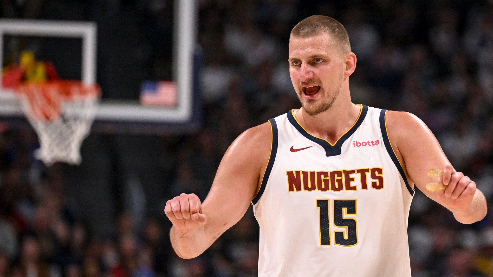

La mejor revista para estar informado de la actualidad deportiva
Últimas noticias
Buscando el milagro
El Real Madrid busca una remontada histórica ante el Arsenal en el mítico Santiago Bernabéu.
Después de un partido de ida complicado en Londres, donde el equipo español sufrió una derrota por 3-1,
los jugadores y el cuerpo técnico confían en el apoyo de su afición para lograr una noche mágica.
Con figuras como Mbappé y Vinicius liderando el ataque, el equipo blanco espera repetir hazañas
históricas como las vividas en otras ediciones de la Champions League. La presión está en su punto
máximo, pero el Real Madrid ha demostrado ser un equipo que nunca se rinde en los momentos más difíciles.
Mbappé y Vinicius buscan su gran noche. .
Triple doble es sinónimo de Nikola Jokic
Nikola Jokic, el talentoso pívot serbio de los Denver Nuggets, ha logrado lo que parecía imposible:
promediar un triple doble durante toda la temporada regular. Este logro lo consolida como uno de los
mejores jugadores de baloncesto de todos los tiempos. Con su visión de juego, capacidad para anotar
desde cualquier posición y su habilidad para asistir a sus compañeros, Jokic ha redefinido el rol
del pívot en la NBA. Además, su liderazgo ha llevado a los Nuggets a ser contendientes serios al título,
demostrando que su impacto va más allá de las estadísticas. Los fanáticos del baloncesto alrededor del
mundo celebran este hito histórico, que marca un antes y un después en el deporte.

El serbio se convirtió en el primer pivot en lograrlo.